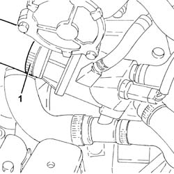
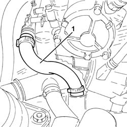

1088D96 hose from rigid pipe for coolant to heat exchanger and exhaust gas water heat exchanger for egr system r r
- Path
- Procedures > 10 ENGINE > 1088 ENGINE COOLING > 1088D COOLANT PIPES AND HOSES > 1088D96 hose from rigid pipe for coolant to heat exchanger and exhaust gas water heat exchanger for egr system r r
- Kind
- repair procedure (removal / refitting; the operation number is the code)
- Applies to
- all engines; all production periods
- Interactive page
- https://sloeber94.github.io/elrnDB-fDbl/en/#/2584513
Applies to: all engines; all production periods
 Removing
Removing
 Refitting
RefittingProceed with the removal 5530B10 battery - r+r .
Proceed with the removal 5530B52 Battery DRIP TRAY/SUPPORT - R.R. .
Proceed with the removal 1048A40 sleeve from air cleaner to flow meter - r + r .
1. Loosen the band and disconnect the radiator upper coolant inlet hose from the thermostat.

Applies to: all engines; all production periods
1. Loosen the band and remove the flexible pipe from the rigid coolant pipe to the E.G.R. system water/exhaust gas heat exchanger.

Applies to: all engines; all production periods
Refitting
RemovingPlace the flexible pipe from the rigid coolant pipe to the E.G.R. system water/exhaust gas heat exchanger back in its housing and secure it using the bands.
Connect the radiator upper coolant inlet hose to the thermostat and tighten the band.
Proceed with the refitting 1048A40 sleeve from air cleaner to flow meter - r + r .
Proceed with the refitting 5530B52 Battery DRIP TRAY/SUPPORT - R.R. .
Proceed with the refitting 5530B10 battery - r+r .
Refill the engine cooling system with coolant 0010T20 coolant change .